Draw¶
[1]:
%load_ext autoreload
%autoreload 2
from py_pol import degrees, np
from py_pol.jones_vector import Jones_vector, create_Jones_vectors
from py_pol.stokes import Stokes, create_Stokes
np.set_printoptions(precision=2)
np.set_printoptions(suppress=True)
drar_ellipse¶
Jones vector¶
[2]:
# Size = 1
J = Jones_vector('Test1')
J.linear_light(amplitude=2, azimuth=30*degrees)
print(J)
J.draw_ellipse(draw_arrow=True)
J.circular_light(amplitude=2, kind='r')
print(J)
J.draw_ellipse(draw_arrow=True)
Test1 =
[+1.732+0.000j]
[+1.000+0.000j]
Test1 =
[+1.414+0.000j]
[+0.000+1.414j]
[2]:
(<Figure size 432x432 with 1 Axes>,
[<matplotlib.axes._subplots.AxesSubplot at 0x1af3d9e1a58>])
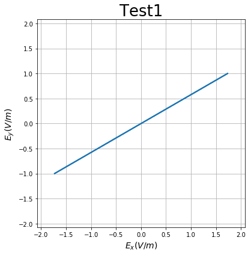
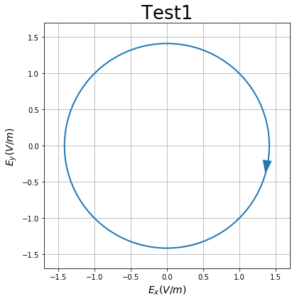
[3]:
# Size > 1
J = Jones_vector('Test1')
angles = np.linspace(0, 180*degrees, 15)
J.linear_light(amplitude=2, azimuth=angles)
print(J)
J.draw_ellipse(draw_arrow=True)
Test1 Ex = [ 2. +0.j 1.95+0.j 1.8 +0.j 1.56+0.j 1.25+0.j 0.87+0.j 0.45+0.j
0. +0.j -0.45+0.j -0.87+0.j -1.25+0.j -1.56+0.j -1.8 +0.j -1.95+0.j
-2. +0.j]
Ey = [0. +0.j 0.45+0.j 0.87+0.j 1.25+0.j 1.56+0.j 1.8 +0.j 1.95+0.j 2. +0.j
1.95+0.j 1.8 +0.j 1.56+0.j 1.25+0.j 0.87+0.j 0.45+0.j 0. +0.j]
[3]:
(<Figure size 432x432 with 1 Axes>,
[<matplotlib.axes._subplots.AxesSubplot at 0x1af3d947278>])
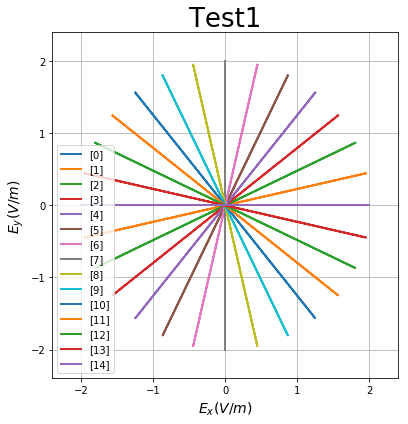
[4]:
# Size > 1, elliptical
J = Jones_vector('Test1')
angles = np.linspace(0, 180*degrees, 7)
J.general_azimuth_ellipticity(amplitude=2, azimuth=angles, ellipticity=15*degrees)
print(J)
J.parameters.amplitudes(verbose=True)
J.draw_ellipse(draw_arrow=True)
Test1 =
[+1.932+0.000j] [+1.673-0.259j] [+0.966-0.448j] [+0.000-0.518j] [-0.966-0.448j] [-1.673-0.259j] [-1.932-0.000j]
[+0.000+0.518j] [+0.966+0.448j] [+1.673+0.259j] [+1.932+0.000j] [+1.673-0.259j] [+0.966-0.448j] [+0.000-0.518j]
The elctric field amplitudes of Test1 are (V/m):
Ex (V/m)
[1.93 1.69 1.06 0.52 1.06 1.69 1.93]
Ey (V/m)
[0.52 1.06 1.69 1.93 1.69 1.06 0.52]
The mean value of param Ex (V/m) is 1.4138534554107614 +- 0.49845183947473476
The mean value of param Ey (V/m) is 1.2118229465003192 +- 0.5329627723233468
[4]:
(<Figure size 432x432 with 1 Axes>,
[<matplotlib.axes._subplots.AxesSubplot at 0x1af3da68898>])
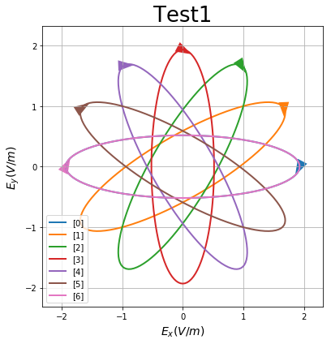
[5]:
# Size > 1, elliptical
J = Jones_vector('Test1')
angles = np.linspace(-45*degrees, 45*degrees, 9)
J.general_azimuth_ellipticity(amplitude=2, azimuth=angles + 15*degrees, ellipticity=angles)
print(J)
J.draw_ellipse(draw_arrow=True)
Test1 =
[+1.225-0.707j] [+1.575-0.357j] [+1.832-0.100j] [+1.957+0.026j] [+1.932+0.000j] [+1.759-0.173j] [+1.466-0.466j] [+1.096-0.835j] [+0.707-1.225j]
[-0.707-1.225j] [-0.535-1.052j] [-0.241-0.759j] [+0.128-0.389j] [+0.518+0.000j] [+0.868+0.350j] [+1.125+0.607j] [+1.250+0.733j] [+1.225+0.707j]
d:\codigo_ucm\py_pol\py_pol\jones_vector.py:2375: RuntimeWarning: invalid value encountered in sqrt
dlp = np.sqrt(1 - dcp**2)
d:\codigo_ucm\py_pol\py_pol\jones_vector.py:2455: RuntimeWarning: invalid value encountered in less
1) < tol_default
[5]:
(<Figure size 432x432 with 1 Axes>,
[<matplotlib.axes._subplots.AxesSubplot at 0x1af3d8f9518>])
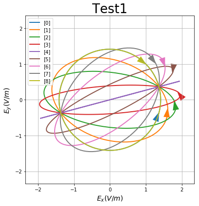
Stokes¶
[6]:
# Size = 1
J = Stokes('Test1')
J.linear_light(amplitude=2, azimuth=30*degrees)
print(J)
J.draw_ellipse(draw_arrow=True)
J.circular_light(amplitude=2, kind='r')
print(J)
J.draw_ellipse(draw_arrow=True)
Test1 @ 30.00 deg =
[+4.000]
[+2.000]
[+3.464]
[+0.000]
Test1 @ 30.00 deg =
[+4.000]
[+0.000]
[+0.000]
[+4.000]
[6]:
(<Figure size 432x432 with 1 Axes>,
[<matplotlib.axes._subplots.AxesSubplot at 0x1af3ec99fd0>])
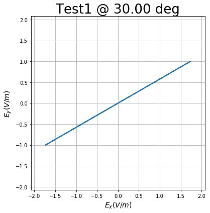
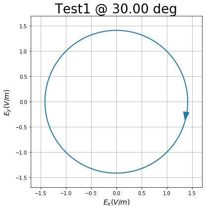
[7]:
# Size > 1, elliptical
J = Stokes('Test1')
angles = np.linspace(0, 180*degrees, 7)
J.general_azimuth_ellipticity(amplitude=2, azimuth=angles, ellipticity=15*degrees)
print(J)
J.draw_ellipse(draw_arrow=True)
Test1 =
[+4.000] [+4.000] [+4.000] [+4.000] [+4.000] [+4.000] [+4.000]
[+3.464] [+1.732] [-1.732] [-3.464] [-1.732] [+1.732] [+3.464]
[+0.000] [+3.000] [+3.000] [+0.000] [-3.000] [-3.000] [+0.000]
[+2.000] [+2.000] [+2.000] [+2.000] [+2.000] [+2.000] [+2.000]
[7]:
(<Figure size 432x432 with 1 Axes>,
[<matplotlib.axes._subplots.AxesSubplot at 0x1af3ed174a8>])
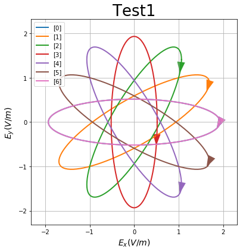
[8]:
# Size > 1, elliptical, depolarized
N=7
J = Stokes('Test1')
angles = np.linspace(0, 180*degrees, N)
deg = np.linspace(0.0, 0.2, N)
J.general_azimuth_ellipticity(amplitude=2, azimuth=angles, ellipticity=15*degrees, degree_pol=deg)
print(J)
J.draw_ellipse(draw_arrow=True, depol_central=True)
Test1 =
[+4.000] [+4.000] [+4.000] [+4.000] [+4.000] [+4.000] [+4.000]
[+0.000] [+0.058] [-0.115] [-0.346] [-0.231] [+0.289] [+0.693]
[+0.000] [+0.100] [+0.200] [+0.000] [-0.400] [-0.500] [+0.000]
[+0.000] [+0.067] [+0.133] [+0.200] [+0.267] [+0.333] [+0.400]
Field [0] is empty.
[8]:
(<Figure size 432x432 with 1 Axes>,
[<matplotlib.axes._subplots.AxesSubplot at 0x1af3ed82400>])
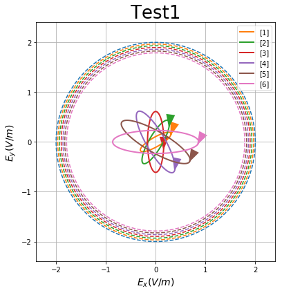
[9]:
# Size > 1, 2D, elliptical, depolarized
N=7
J = Stokes('Test1')
angles = np.linspace(0, 90*degrees, 5)
deg = np.linspace(0.1, 0.5, 3)
Angles, Deg = np.meshgrid(angles, deg)
J.general_azimuth_ellipticity(amplitude=2, azimuth=Angles, ellipticity=15*degrees, degree_depol=Deg)
print(J)
J.draw_ellipse(draw_arrow=True, depol_central=True)
Test1 S0 =
[[4. 4. 4. 4. 4.]
[4. 4. 4. 4. 4.]
[4. 4. 4. 4. 4.]]
Test1 S1 =
[[ 3.45 2.44 0. -2.44 -3.45]
[ 3.3 2.34 0. -2.34 -3.3 ]
[ 3. 2.12 0. -2.12 -3. ]]
Test1 S2 =
[[0. 2.44 3.45 2.44 0. ]
[0. 2.34 3.3 2.34 0. ]
[0. 2.12 3. 2.12 0. ]]
Test1 S3 =
[[1.99 1.99 1.99 1.99 1.99]
[1.91 1.91 1.91 1.91 1.91]
[1.73 1.73 1.73 1.73 1.73]]
[9]:
(<Figure size 432x432 with 1 Axes>,
[<matplotlib.axes._subplots.AxesSubplot at 0x1af3ed17550>])
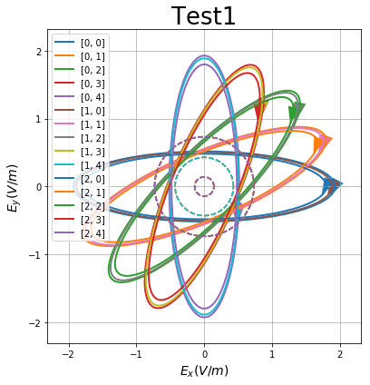
[10]:
# Size > 1, 2D, elliptical, depolarized, subplot as shape
N=7
J = Stokes('Source1')
angles = np.linspace(0, 90*degrees, 5)
deg = np.linspace(0.1, 0.5, 3)
Angles, Deg = np.meshgrid(angles, deg)
J.general_azimuth_ellipticity(amplitude=2, azimuth=Angles, ellipticity=15*degrees, degree_depol=Deg)
print(J)
J.draw_ellipse(draw_arrow=True, depol_central=True, subplots='as_shape', figsize=(16, 13), filename='test_subplots.jpg')
Source1 S0 =
[[4. 4. 4. 4. 4.]
[4. 4. 4. 4. 4.]
[4. 4. 4. 4. 4.]]
Source1 S1 =
[[ 3.45 2.44 0. -2.44 -3.45]
[ 3.3 2.34 0. -2.34 -3.3 ]
[ 3. 2.12 0. -2.12 -3. ]]
Source1 S2 =
[[0. 2.44 3.45 2.44 0. ]
[0. 2.34 3.3 2.34 0. ]
[0. 2.12 3. 2.12 0. ]]
Source1 S3 =
[[1.99 1.99 1.99 1.99 1.99]
[1.91 1.91 1.91 1.91 1.91]
[1.73 1.73 1.73 1.73 1.73]]
Image test_subplots.jpg saved succesfully!
[10]:
(<Figure size 1152x936 with 15 Axes>,
[<matplotlib.axes._subplots.AxesSubplot at 0x1af3eecf7b8>,
<matplotlib.axes._subplots.AxesSubplot at 0x1af3eef2eb8>,
<matplotlib.axes._subplots.AxesSubplot at 0x1af3ed82710>,
<matplotlib.axes._subplots.AxesSubplot at 0x1af3edabcc0>,
<matplotlib.axes._subplots.AxesSubplot at 0x1af3ef10860>,
<matplotlib.axes._subplots.AxesSubplot at 0x1af3f454c18>,
<matplotlib.axes._subplots.AxesSubplot at 0x1af3f47ecc0>,
<matplotlib.axes._subplots.AxesSubplot at 0x1af3f41ddd8>,
<matplotlib.axes._subplots.AxesSubplot at 0x1af3f565cf8>,
<matplotlib.axes._subplots.AxesSubplot at 0x1af3ee00208>,
<matplotlib.axes._subplots.AxesSubplot at 0x1af3ee54b70>,
<matplotlib.axes._subplots.AxesSubplot at 0x1af3f50c828>,
<matplotlib.axes._subplots.AxesSubplot at 0x1af3f6b2978>,
<matplotlib.axes._subplots.AxesSubplot at 0x1af3f607cc0>,
<matplotlib.axes._subplots.AxesSubplot at 0x1af3f428cf8>])
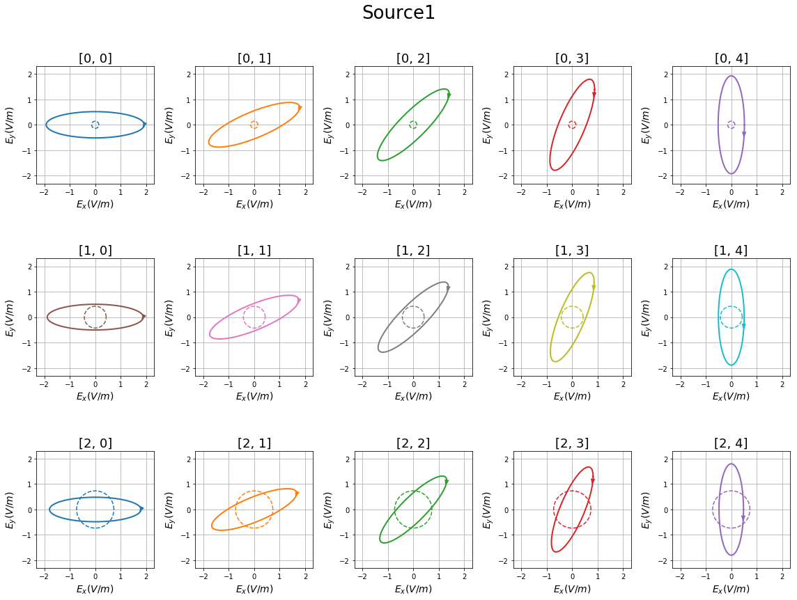
[11]:
# Size > 1, 3D, elliptical, depolarized, subplot as shape
N=7
J = Stokes('Source1')
angles = np.linspace(0, 90*degrees, 5)
ell = np.linspace(15, 50, 5)*degrees
deg = np.linspace(0.1, 0.5, 3)
Ell, Deg, Angles = np.meshgrid(ell, deg, angles)
print(Angles.shape)
J.general_azimuth_ellipticity(amplitude=2, azimuth=Angles, ellipticity=Ell, degree_depol=Deg)
# print(J)
_ = J.draw_ellipse(draw_arrow=True, depol_central=True, subplots='as_shape', figsize=(20, 15), filename='test_subplots.jpg')
(3, 5, 5)
Image test_subplots.jpg saved succesfully!
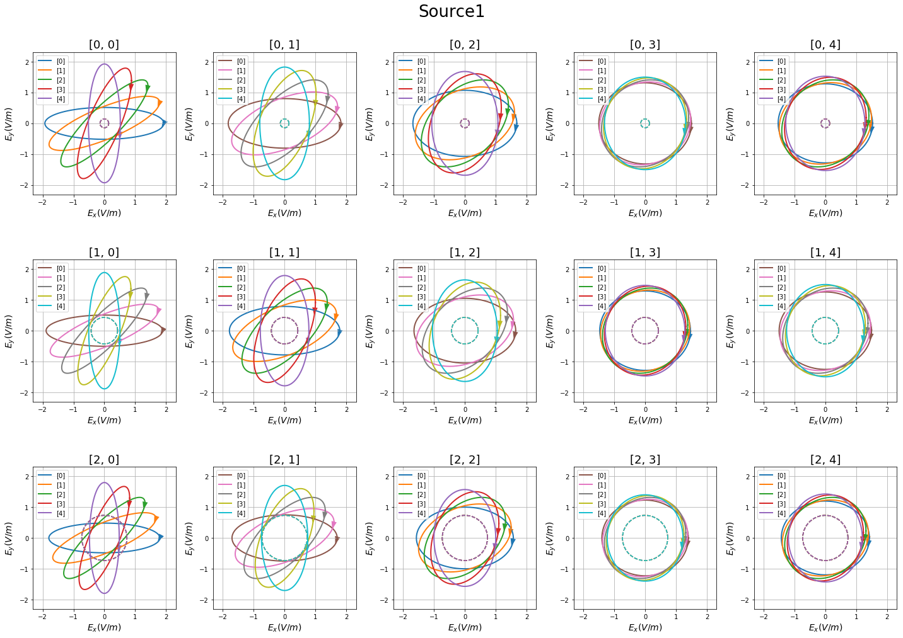
[12]:
# Size = 1, 2D, elliptical, depolarized
N=7
J = Stokes('Test1')
angles = 45*degrees
deg = 0.2
Angles, Deg = np.meshgrid(angles, deg)
J.general_azimuth_ellipticity(amplitude=2, azimuth=Angles, ellipticity=15*degrees, degree_depol=Deg)
_ = J.draw_ellipse(draw_arrow=True, depol_contour=True, depol_central=True)
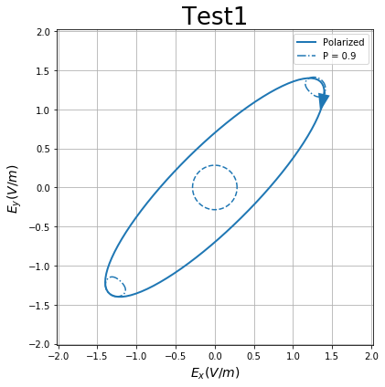
[13]:
# Size > 1, 2D, elliptical, depolarized
N=7
J = Stokes('Test1')
angles = np.linspace(0, 90*degrees, 5)
deg = 0.25
Angles, Deg = np.meshgrid(angles, deg)
J.general_azimuth_ellipticity(amplitude=2, azimuth=Angles, ellipticity=15*degrees, degree_depol=Deg)
J.draw_ellipse(draw_arrow=True, depol_contour=True)
[13]:
(<Figure size 432x432 with 1 Axes>,
[<matplotlib.axes._subplots.AxesSubplot at 0x1af3f08e828>])
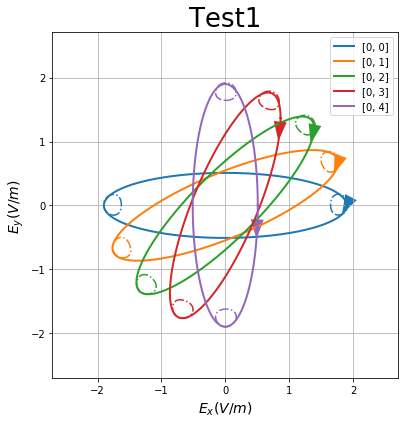
[14]:
# Size > 1, 3D, elliptical, depolarized, subplot as shape
N=7
J = Stokes('Source1')
angles = np.linspace(0, 90*degrees, 5)
ell = np.linspace(15, 50, 5)*degrees
deg = np.linspace(0.1, 0.5, 3)
Ell, Deg, Angles = np.meshgrid(ell, deg, angles)
print(Angles.shape)
J.general_azimuth_ellipticity(amplitude=2, azimuth=Angles, ellipticity=Ell, degree_depol=Deg)
# print(J)
_ = J.draw_ellipse(draw_arrow=True, depol_contour=True, subplots='as_shape', figsize=(20, 15), filename='test_subplots_contour.jpg')
(3, 5, 5)
Image test_subplots_contour.jpg saved succesfully!
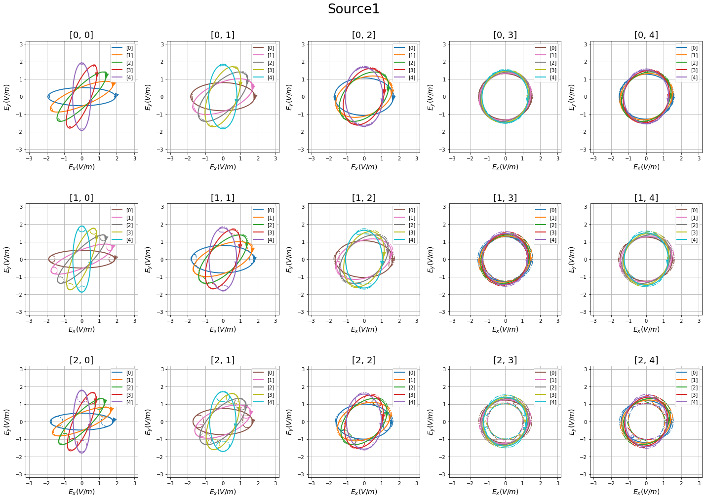
[15]:
# Size = 1, 2D, elliptical, depolarized
N=7
J = Stokes('Test1')
angles = 45*degrees
deg = 0.2
Angles, Deg = np.meshgrid(angles, deg)
J.general_azimuth_ellipticity(amplitude=2, azimuth=Angles, ellipticity=15*degrees, degree_depol=Deg)
_ = J.draw_ellipse(draw_arrow=True, depol_contour=True, depol_prob=True)
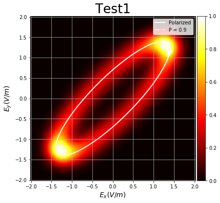
[16]:
# Size > 1, 2D, elliptical, depolarized
N=7
J = Stokes('Test1')
angles = np.linspace(0, 90*degrees, 6)
deg = 0.2
Angles, Deg = np.meshgrid(angles, deg)
J.general_azimuth_ellipticity(amplitude=2, azimuth=Angles, ellipticity=15*degrees, degree_depol=Deg)
_=J.draw_ellipse(draw_arrow=True, depol_prob=True, depol_contour=True, contour_levels = (0.1, ), figsize=(15, 23), filename='test_subplots_prob.jpg')
Image test_subplots_prob.jpg saved succesfully!

Plot from_distribution¶
[17]:
# Create the random distribution
N = 361
angles = np.linspace(0, 360*degrees, N)
phase = 270*degrees
delay = 270*degrees
Ax, Ay = (2, 2)
Ex = Ax * np.exp(1j * (angles + phase))
Ey = Ay * np.exp(1j * (angles + delay + phase))
r1 = np.random.normal(size=N, scale=0.5)
r2 = np.random.rand(N) * 2*np.pi
r3 = np.random.rand(N) * 2*np.pi
Exr = r1 * np.exp(1j * r2)
Eyr = r1 * np.exp(1j * r3)
Ext = Ex + Exr
Eyt = Ey + Eyr
S1 = Stokes()
S1.from_distribution(Ex=Ex, Ey=Ey)
S2 = Stokes()
S2.from_components((2*np.var(r1), 0, 0, 0), global_phase=None)
S1 = S1 + S2
S1.name = 'Original'
print(S1)
S2.from_distribution(Ex=Ext, Ey=Eyt)
S2.name = 'Direct'
print(S2)
S3 = Stokes()
S3.from_distribution(Ex=Ext, Ey=Eyt, method='fit')
S3.name = 'Fit'
print(S3)
Original =
[+8.517]
[+0.000]
[-0.000]
[+8.000]
Direct =
[+8.640]
[+0.061]
[+0.153]
[+8.151]
Fit =
[+8.508]
[+0.062]
[+0.642]
[+8.351]
[18]:
# Plot the results
fig, axes = S1.draw_ellipse(depol_prob=True, depol_contour=True, contour_levels=(0.25,))
axes[0].plot(Ext.real, Eyt.real, 'b+')
fig, axes = S2.draw_ellipse(depol_prob=True, depol_contour=True, contour_levels=(0.25,))
axes[0].plot(Ext.real, Eyt.real, 'b+')
fig, axes = S3.draw_ellipse(depol_prob=True, depol_contour=True, contour_levels=(0.25,))
axes[0].plot(Ext.real, Eyt.real, 'b+')
[18]:
[<matplotlib.lines.Line2D at 0x1af418fb400>]
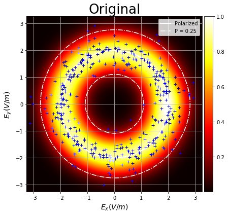
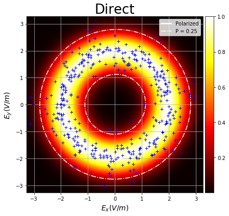
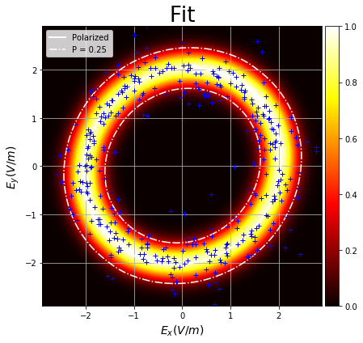
[ ]:
[ ]:
x = np.linspace(-1.2, 1.2, 121)
X, Y = np.meshgrid(x,x)
angles = np.linspace(0, 360*degrees, 37)
E = np.cos(angles)
T = np.abs(np.subtract.outer(X, E)).argmin(2)
[ ]:
import matplotlib.pyplot as plt
plt.figure(figsize=(8,8))
plt.imshow(T)
[ ]: